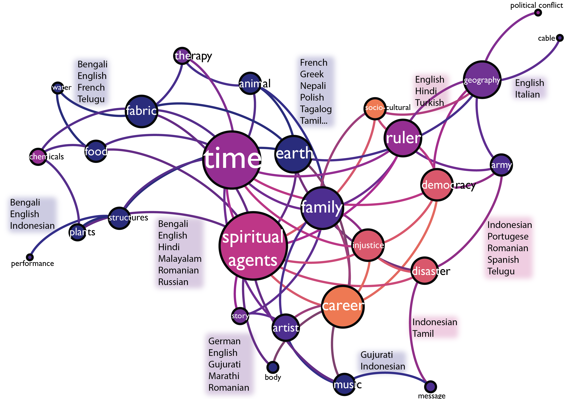

I'm a computational social scientist interested in human learning and language. I use a wide range of methods including behavioral experiments, NLP techniques, and analysis of large trace data. Currently, I am a Research Scientist at Carnegie Mellon University in the Department of Psychology, and Department of Social and Decision Sciences.
I earned my PhD in Psychology from Stanford University where I worked with Michael C. Frank. I was then a post-doctoral scholar with James Evans (U of Chicago) and Gary Lupyan (UW-Madison). Before graduate school, I studied linguistics at Reed College. I have authored 15+ articles in peer-reviewed journals , including Nature Human Behavior, PNAS, and Psychological Science. My work has been featured in Scientific American, Fast Company, and The Kansas City Star.
In several recent papers, I've examined the extent to which word co-occurrence statistics in language corpora contain subtle information about gender stereotypes, and how humans might learn this information.
In another line of work, we've been trying to understand the ways in which representations of meaning vary across groups of people. In one project (Lewis, Cahill, Madnani, & Evans, under revision), we've examined this question through word embedding models trained on second-language text. A key finding from this work is that languages vary more in terms of their "global" semantic relations, relative to "local" ones.

In a related project, we've analyzed millions of sketches from the Google QuickDraw dataset. The plot below shows the prototypical “bread” in each country, calculated as the drawing with the smallest average pairwise distance to other drawings from the same country (Lewis, Balamurugan, Zheng, & Lupyan, 2021) .
At Carnegie Mellon, I teach an R-based research methods course, Modern Research Methods. The course is designed to provide students with an understanding of the process of cumulative science, and to introduce them to a set of modern tools for conducting science in this framework.
I love exploring found data, visualizing complex datasets, and making interactive dashboards. When not playing with data, I enjoy backpacking and baking pie 🍰
Theme by orderedlist